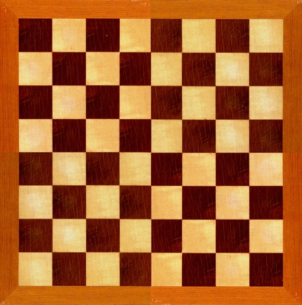
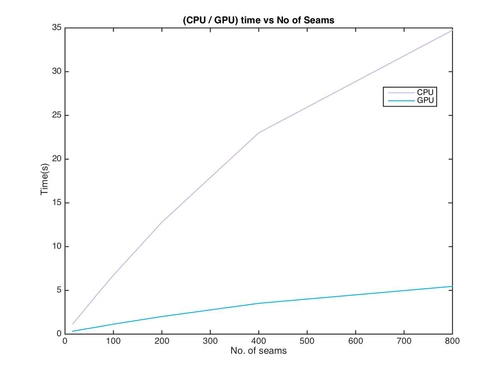
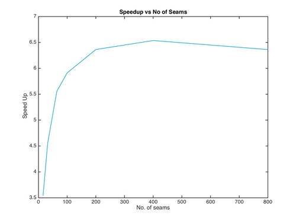

Parallel Seam Carving
Aditya Bist, Vinay Palakkode
Our final project for the course 15-418: Parallel Computer Architecture and Programming
Seam Carving is a content-aware image resizing algorithm developed by Shai Avidan, of Mitsubishi Electric Research Laboratories (MERL), and Ariel Shamir, of the Interdisciplinary Center and MERL.[1] Check out the demo here. For the final writeup of the project, click here.
The Approach
Dynamic programming is essentially sequential. The only way to parallelize such algorithms would be making approximations based on heuristics and have a balance / trade off between quality and performance.
Our proposed algorithm would not beat the quality of image generated by classical seam carving. However, we can improve the quality of our algorithm by choosing a more sophisticated energy function which is more verbose in terms of visual salience. Eg: using Histogram of Oriented Gradients instead of simple 3x3 gradients/edge detectors.
Conventional Seam Carving
The conventional seam carving algorithm can be summarized as :
- Compute the energy map (gradient magnitude) on a per pixel basis.
- Compute the minimum cost table
- Use bottom up DP as mentioned here to find a seam low energy 8-connected path
- Resize the image matrix by removing the seam calculated above and new image matrix will be 1 pixel smaller in width.
- Repeat 1 through 4 for the resized image obtained at step 4 (till the required number of seams are removed).
Our Seam Carving
- Compute the energy map (gradient magnitude) on a per pixel basis.
- Sort the energies in the first row by energy values and keep track of the indices of the points in the increasing order of the energy. This will be done only once for a given image.
- Compute the minimum cost table: based on the number of seams required to be removed, start computing seams based on the indices obtained from step 2. i.e. Start with the lowest energy pixel in the first row and pick the next lowest for the next seem and so on.
- In over approach, we don't recompute the energy map after removing each seam. While computing the minimum seam path, if a point in a row is used by a seam that is marked as infinity in the energy map so that multiple seams don't converge.
- The resize happens in a single go, since we have computed all the seams in one iteration.
- Step 4 is a major approximation that avoid repetitive energy map computation after removing every seam. This is a very good optimization for a CPU only implementation. On GPU’s the embarrassingly data parallel stage of the algorithm is the repetitive energy map computation which we have avoided in the new algorithm.
- This would also mean drastic reduction in memory accesses. But since the image can fit into L2, this would n’t make huge impact in terms of latency reduction.
Intermediate Results
All the experiments were run on the GHC 41 machine with the following configuration :
- Architecture: x86_64
- CPU op-mode(s): 32-bit, 64-bit
- CPU(s): 12
- Thread(s) per core: 2
- Core(s) per socket: 6
- Socket(s): 1
- NUMA node(s): 1
- Model: 44
- Stepping: 2
- CPU MHz: 3200.087
- BogoMIPS: 6400.17
- Virtualization: VT-x
- L1d cache: 32K
- L1i cache: 32K
- L2 cache: 256K
- L3 cache: 12288K
- GPU: NVIDIA GTX 780 (compute capability 3.5)
- All the test images were of resolution 1024 x 768 Bitmaps.
- The baseline is a single threaded CPU implementation aided with OpenCV APIs which is implicitly AVX optimized (No explicit vectorization done, although we tried our best to make use of locality in memory accesses.
- The GPU implementation is reported on the results from the same machine with NVIDIA GTX 780.
Visualization of Seam Carving on some images
Here we show some assorted pictures and the result of using seam carving on them. We mark the seams removed in the image to show the minimum energy path in each image. This method is optimal for some, while not so optimal for other images, as shown by the seams marked in the images below.
Original Image

Output Picture
200 seams removed
This was an example of good resizing technique, because we preserve the castle, which is the main highlight of the picture, while removing seams with not so important content. This is because majority of the content is condensed in one side of the picture.
Original Image

40 seams removed
Output Image
This was also an example of good resizing technique, because of condensed image content, thus making two stark areas of energy gradients.
Original Image
200 seams removed
Output Image
This is an example of sub-optimal image resizing. We see in the output that the original squares aren't squares any more. This happens because we resize the on a really uniform image, and hence removal of seams consequently distort the image.
Performance
Time taken on the CPU and the GPU vs Number of seams removed
Speed of GPU implementation wrt baseline vs Number of seams removed
We have come up with a new algorithm which is 25x faster than the baseline on x86 Haswell CPUs. Kindly look into the writeup for the algorithm description and detailed performance analysis.